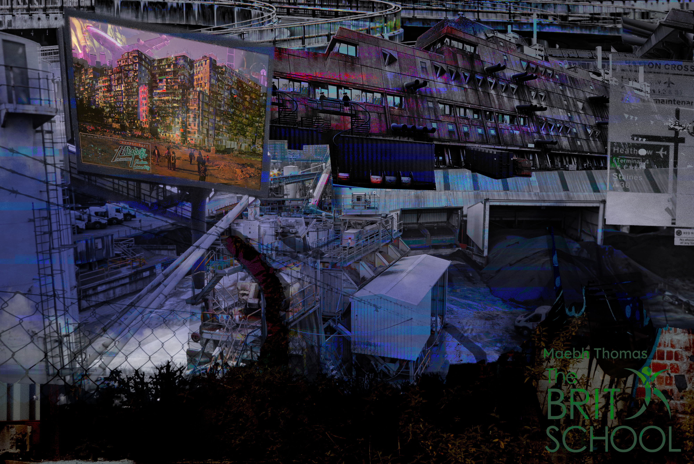

Photoshop Creative Composition

This is a quickly thrown together compositon of previose compositions of photos off the internet and some photos I took around heathrow when researching my YR12 CMP.


This was one of my first things I made in PS after getting it again joining collage. It is based off post war dutone print and an animal testing lab in berlin and vibes.

This I made at something like 4 in the morning much sleep deprive after a long art blook mixed with mental breakdown and I've spent far longer on other things but it stuck with me.